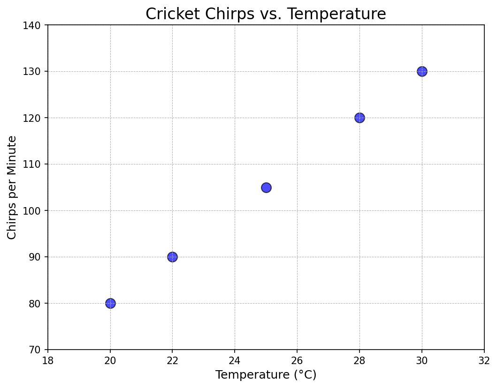
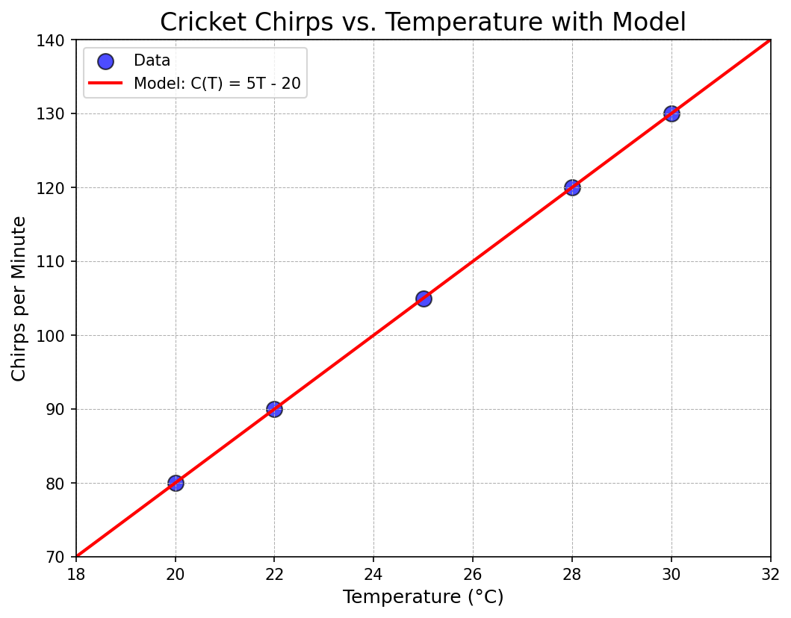
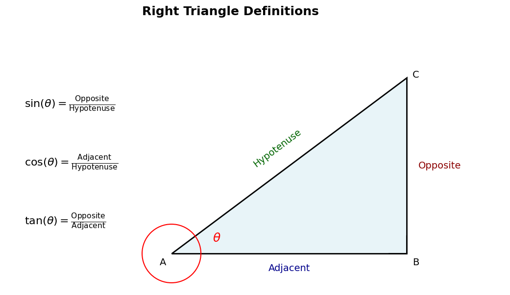
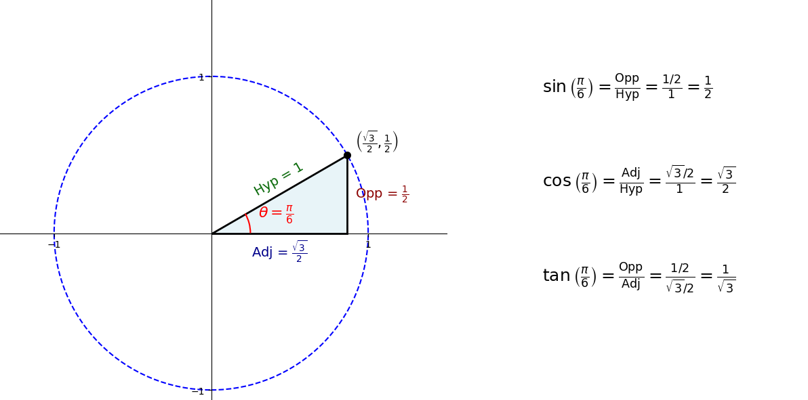
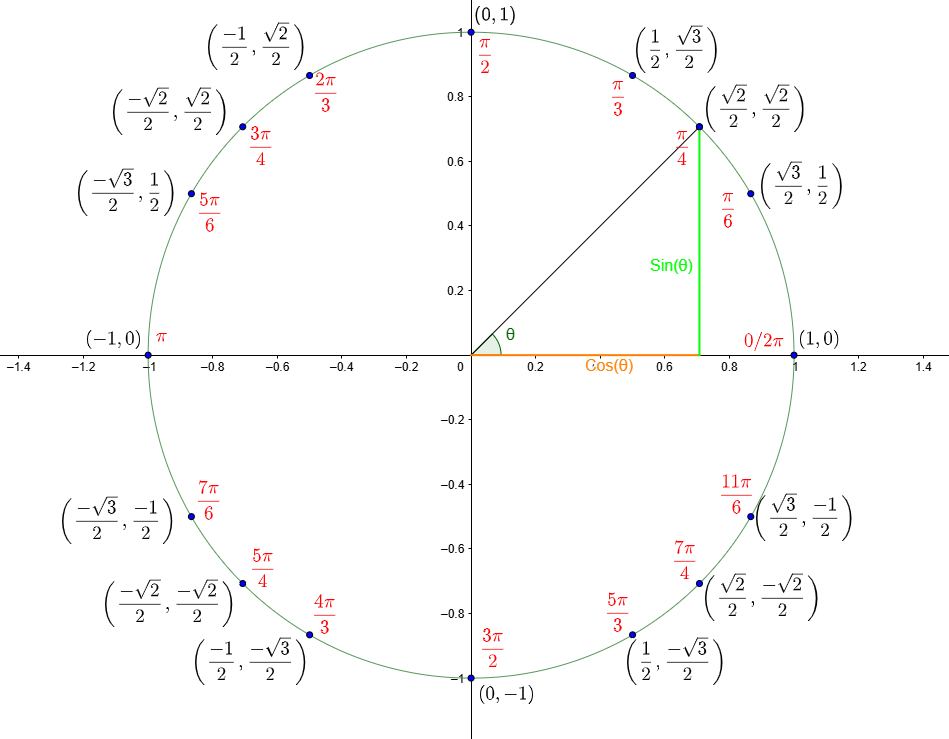

We continue with our precalculus review. We'll see how we can derive a function from real-world data to model the physical world. This serves as our entry point to discussing other families of functions, which are essentialfor what we will do in calculus.
It's a common observation that crickets chirp more frequently as the temperature rises. Let's imagine we're field biologists who have collected the following data:
| Temperature (°C), $T$ | Chirps per Minute, $C$ |
|---|---|
| 20 | 80 |
| 22 | 90 |
| 25 | 105 |
| 28 | 120 |
| 30 | 130 |
Our first step is to visualize the data. We'll plot temperature on the x-axis (our independent variable) and chirps per minute on the y-axis (our dependent variable).
Scientists and engineers live by this principle: visualize your data first. A plot reveals patterns that a table of numbers can hide. Here, the points form a nearly perfect line, which suggests a linear relationship.
To create a formula, we can use the point-slope form of a linear equation, $y - y_1 = m(x - x_1)$. In our context, this is $C - C_1 = m(T - T_1)$. We need to find the slope ($m$) and then use one of our data points.
Let's find the slope using two points from our data, $(T_1, C_1) = (20, 80)$ and $(T_2, C_2) = (30, 130)$:
$$m = \frac{\text{change in chirps}}{\text{change in temperature}} = \frac{\Delta C}{\Delta T} = \frac{130 - 80}{30 - 20} = \frac{50}{10} = 5$$
The slope is 5 chirps/minute per degree Celsius. Now we use the point-slope form with $m=5$ and the point $(T_1, C_1) = (20, 80)$:
$$ C - C_1 = m(T - T_1) $$
$$ C - 80 = 5(T - 20) $$
Now, let's solve for $C$ to get the slope-intercept form:
$$ C = 5T - 100 + 80 $$
$$ C = 5T - 20 $$
So, our formula is $C(T) = 5T - 20$. Let's plot this line on our graph to see how well it fits the data.
Now for the powerful part. We can use our model to make a prediction for a temperature not in our data set, like 26°C.
$$ C(26) = 5(26) - 20 = 130 - 20 = 110 $$
Our model predicts that at 26°C, the crickets will chirp approximately 110 times per minute.
This leads us to the formal definition of a function. A linear model is just one specific type of function.
A function $f$ is a rule that assigns to each element $x$ in a set $D$ (the domain) exactly one element, $f(x)$, in a set $E$ (the codomain). The set of all possible values of $f(x)$ as $x$ varies throughout the domain is called the range of the function.
In calculus, we'll study many types of functions. Let's briefly review the most common families.
A polynomial is a function of the form $P(x) = a_n x^n + a_{n-1} x^{n-1} + \dots + a_1 x + a_0$. The shape of the graph is largely determined by its degree, $n$.
An exponential function has the form $f(x) = b^x$, where the base $b$ is a positive constant. These model phenomena like population growth and radioactive decay. The special base $e \approx 2.71828$ is the most common in calculus.
If $b > 1$, the function shows growth. If $0 < b < 1$, the function shows decay. A negative exponent, as in $e^{-x} = (1/e)^x$, also indicates decay.
| Property Name | Rule | Description |
|---|---|---|
| Product of Powers | $b^x \cdot b^y = b^{x+y}$ | When multiplying powers with the same base, add the exponents. |
| Quotient of Powers | $\frac{b^x}{b^y} = b^{x-y}$ | When dividing powers with the same base, subtract the exponents. |
| Power of a Power | $(b^x)^y = b^{xy}$ | When raising a power to another power, multiply the exponents. |
1. Simplify $(4x^3y^2)(5x^4y)$:
$$(4 \cdot 5)(x^3 \cdot x^4)(y^2 \cdot y^1)$$
$$20x^{3+4}y^{2+1}$$
$$20x^7y^3$$
2. Simplify $\left(\frac{2a^4}{b^2}\right)^3$:
$$\frac{(2^3)(a^4)^3}{(b^2)^3}$$
$$\frac{8a^{4 \cdot 3}}{b^{2 \cdot 3}}$$
$$\frac{8a^{12}}{b^6}$$
3. Simplify $\frac{(x^{-2}y^3)^{-2}}{(x^3y^{-1})^2}$:
$$\frac{x^{(-2)(-2)}y^{(3)(-2)}}{x^{(3)(2)}y^{(-1)(2)}} = \frac{x^4y^{-6}}{x^6y^{-2}}$$
$$x^{4-6}y^{-6-(-2)} = x^{-2}y^{-4}$$
$$\frac{1}{x^2y^4}$$
Trigonometric functions are essential for describing periodic phenomena. They can be defined in two primary ways: using a right triangle, or using the unit circle.
For an acute angle $\theta$ in a right triangle, we define the trigonometric functions as ratios of the lengths of the sides relative to that angle.
The unit circle provides a more general definition that works for any angle. For an angle $\theta$, the point $(x,y)$ where the angle's terminal side intersects the unit circle gives us $x = \cos(\theta)$ and $y = \sin(\theta)$.
The unit circle is a powerful tool for finding the exact trigonometric values of key angles.
Click here to see the relationship between the unit circle and the graphs of sin, cos, and tan.
| $\theta$ | $0$ | $\pi/6$ | $\pi/4$ | $\pi/3$ | $\pi/2$ | $\pi$ | $3\pi/2$ | $2\pi$ |
|---|---|---|---|---|---|---|---|---|
| $\sin(\theta)$ | $0$ | $1/2$ | $\sqrt{2}/2$ | $\sqrt{3}/2$ | $1$ | $0$ | $-1$ | $0$ |
| $\cos(\theta)$ | $1$ | $\sqrt{3}/2$ | $\sqrt{2}/2$ | $1/2$ | $0$ | $-1$ | $0$ | $1$ |
| $\tan(\theta)$ | $0$ | $\sqrt{3}/3$ | $1$ | $\sqrt{3}$ | undefined | $0$ | undefined | $0$ |
A logarithmic function answers the question: "what exponent must we raise a base to, in order to get a certain number?" The expression $y = \log_b(x)$ is read as "y is the logarithm to the base b of x".
For example, $\log_2(8) = 3$ because we must raise the base $2$ to the power of $3$ to get $8$. That is, $2^3=8$.
| Property Name | Rule | Description |
|---|---|---|
| Product Rule | $\log_b(xy) = \log_b(x) + \log_b(y)$ | The logarithm of a product is the sum of the logarithms. |
| Quotient Rule | $\log_b\left(\frac{x}{y}\right) = \log_b(x) - \log_b(y)$ | The logarithm of a quotient is the difference of the logarithms. |
| Power Rule | $\log_b(x^n) = n \cdot \log_b(x)$ | The logarithm of a power is the exponent times the logarithm of the base. |
1. Expand $\log_3(9x^2y)$:
$$ \log_3(9) + \log_3(x^2) + \log_3(y) $$
$$ 2 + 2\log_3(x) + \log_3(y) $$
2. Condense $2\ln(x) + \ln(x+1) - 3\ln(y)$:
$$ \ln(x^2) + \ln(x+1) - \ln(y^3) $$
$$ \ln(x^2(x+1)) - \ln(y^3) $$
$$ \ln\left(\frac{x^2(x+1)}{y^3}\right) $$
Composition is the act of applying one function to the result of another. The composition of $f$ and $g$ is written $(f \circ g)(x)$ and is defined as $f(g(x))$. You work from the inside out.
Let \(f(x) = x^2\), \(g(x) = x-3\), and \(h(x) = \cos(x)\).
1. \( (f \circ g)(x) = f(g(x)) = f(x-3) = (x-3)^2 = x^2 - 6x + 9 \).
2. \( (g \circ f)(x) = g(f(x)) = g(x^2) = x^2 - 3 \).
3. \( (f \circ h)(x) = f(h(x)) = f(\cos(x)) = (\cos(x))^2 = \cos^2(x) \).
Decomposition is the reverse process. Given a complicated function, we find simpler functions that compose to create it.
1. $F(x) = \sqrt{x+4}$. Let inner function $g(x)=x+4$ and outer function $f(x)=\sqrt{x}$. Then $F(x)=f(g(x))$.
2. $G(x) = e^{2x}$. Let inner function $g(x)=2x$ and outer function $f(x)=e^x$. Then $G(x)=f(g(x))$.
3. $H(x) = (\ln x)^3$. Let inner function $g(x)=\ln x$ and outer function $f(x)=x^3$. Then $H(x)=f(g(x))$.
If a function $f$ has an inverse $f^{-1}$, the inverse "undoes" the action of $f$. For this to be possible, the function must be one-to-one, meaning it passes the Horizontal Line Test.
The most important pair of inverse functions for calculus is $f(x) = e^x$ and its inverse $f^{-1}(x) = \ln(x)$. They undo each other:
$$ e^{\ln(x)} = x \quad \text{and} \quad \ln(e^x) = x $$
Graphically, the inverse of a function is its reflection across the line $y=x$.
A powerful technique in mathematics is to create new functions by applying transformations to existing, simpler "parent" functions. This allows us to understand the behavior of complex functions by seeing them as modifications of functions we already know.
Shifts are transformations that move the entire graph of a function without changing its shape. Let $c$ be a positive constant:
1. Vertical Shift: The graph of $g(x) = x^2 + 2$ is the graph of the parent function $f(x)=x^2$ shifted up by 2 units.
2. Horizontal Shift: The graph of $g(x) = (x-3)^2$ is the graph of the parent function $f(x)=x^2$ shifted to the right by 3 units.
Click here to explore horizontal and vertical shifts on Desmos.
Completing the square is an algebraic technique used to rewrite a quadratic function from its standard form, $y = ax^2+bx+c$, into its vertex form, $y = a(x-h)^2+k$. The vertex form is extremely useful because it immediately tells us the horizontal and vertical shifts.
The motivation for the process comes from the structure of a squared binomial: $(x+a)^2 = x^2 + 2ax + a^2$. The key is that the constant term ($a^2$) is the square of half the coefficient of the x-term ($2a$). We exploit this to create a perfect square.
Let's transform the quadratic $y = x^2 + 6x + 5$.
1. Group the x-terms:
$$y = (x^2 + 6x) + 5$$
2. Determine the term to complete the square: The coefficient of our x-term is 6. To match the pattern $x^2 + 2ax$, we take half of this coefficient, which is $3$, and square it to get $9$. This is the term we need.
3. Add and subtract this term inside the parentheses. This is like adding zero, so it doesn't change the function's value:
$$y = (x^2 + 6x + 9 - 9) + 5$$
4. Factor the perfect square trinomial and move the extra term outside:
$$y = (x+3)^2 - 9 + 5$$
5. Combine the constant terms:
$$y = (x+3)^2 - 4$$
Result: From this vertex form, we can see that the graph of $y=x^2$ has been shifted 3 units to the left and 4 units down.
That concludes our pre-calculus review. Understanding these function families and how to manipulate them is critical for your success as we move into the core concepts of calculus, starting with limits in our next lecture.